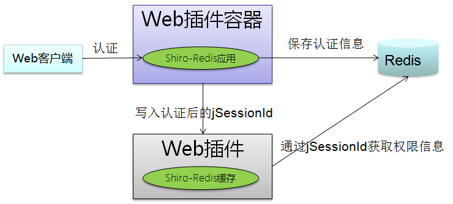
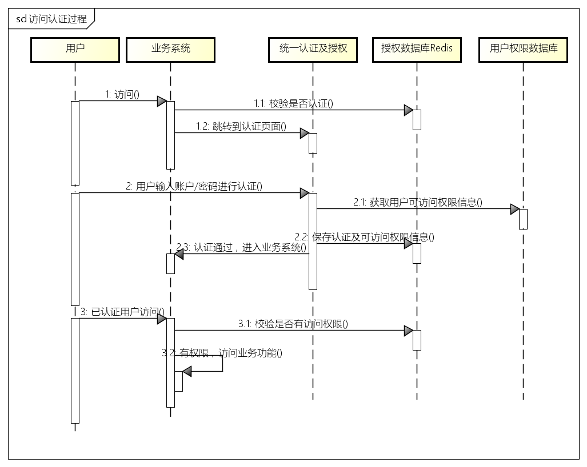
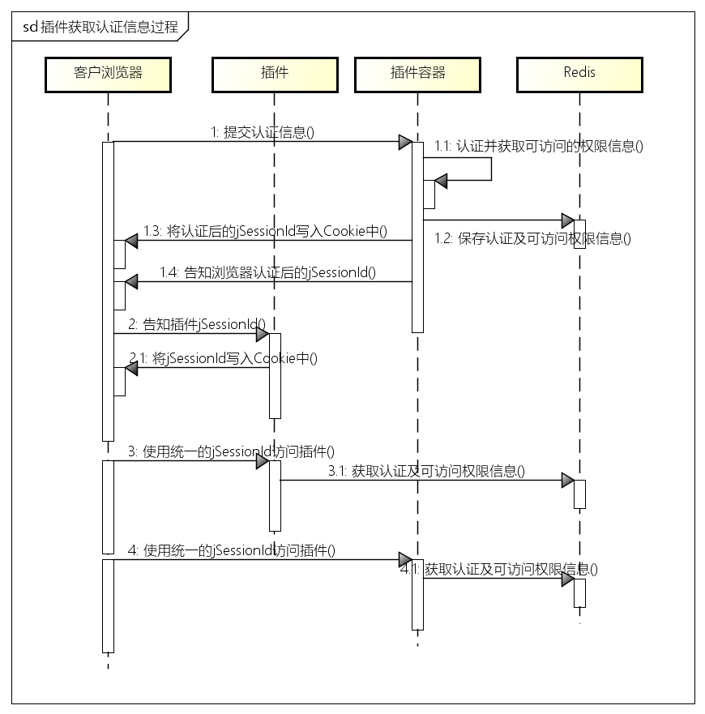

容器主要提供统一的权限管理（认证、授权、鉴权）和插件管理功能。权限管理采用Shiro、redis在应用层来实现，抛弃了tomcat等web服务器提供的session管理功能。结构如下图：

认证功能是由容器提供，插件不提供认证功能。用户在容器中认证后，容器将已认证的jSessionId传送给插件，插件通过jSessionId从redis中获取用户的认证信息，即完成统一的认证过程。用户可以通过Shiro的提供的API来获取用户的认证信息，可以参考 SecurityUtils.getSubject() 的用法。
统一授权是指统一管理插件的资源，统一授予给用户。 插件注册时，将自身的资源注册到容器中，容器统一管理所有插件的资源；管理员可以通过容器提供的权限管理功能，将这些资源分配给用户。
判断用户是否具有资源的访问权限，即鉴权。统一鉴权是指在容器和插件中，采用统一的权限校验方式来判断用户是否可以访问某资源，插件无需为鉴权开发任何功能。用户通过认证后，将获取所拥有的插件资源访问权限，并将此权限信息缓存入redis数据库，而插件通过jSessionId从redis中获取用户的权限信息，完成权限校验。
页面的鉴权是通过tag完成的，目前提供freemaker和jsp两套标签。鉴权标签是通过资源url来判断的，所以 插件必须保证自身提供的资源url在所有插件资源中是唯一的 。
插件管理提供插件注册、启用/停用、修改、删除等功能，而插件监控主要是监控插件的运行状况，当插件异常停止时，发出告警信息。
用户访问业务系统的认证及鉴权过程如下：

插件获取认证授权信息过程如下：

插件注册到应用插件容器有两种方式： - 插件启动时注册容器 容器提供的 插件 注册接口： url ： http://xxx.xxx.xxx.xxx:port/{contextPath}/uaa/re g, 参数： 插件自解释JSON，参见下面的 插件自解释接口
返回值：{status: , message: }， status为0表示调用成功， 1表示失败； message为返回信息
插件自解释接口标准如下：
{
"id": "pluginId",
"name": "插件Demo",
"uaaUrl": "http://192.168.0.209:8080/uaa/ck",
"menuJson": "[
{'id':'pluginId', 'name':'插件2', 'pid':null, 'description':null, 'pageurl':null, 'type':1, 'state':'是', 'sort':null, 'icon':null},
{'id':'pluginId_list', 'name':'列表', 'pid':'pluginId', 'description':null, 'pageurl':'/system/plugin/list', 'type':1, 'state':'是', 'sort':null, 'icon':null},
{'id':'pluginId_update', 'name':'修改', 'pid':'pluginId', 'description':null, 'pageurl':'/system/plugin/update', 'type':0, 'state':'是', 'sort':null, 'icon':null},
{'id':'pluginId_delete', 'name':'删除', 'pid':'pluginId', 'description':null, 'pageurl':'/system/plugin/delete', 'type':0, 'state':'是', 'sort':null, 'icon':null}
]"
}
插件自解释接口中的 menuJson字段的值是一个JSON字符串，用来传递插件资源，是资源的列表。除menuJson之外的信息是插件自身的信息。
插件必须实现一个接收 认证授权信息的URL，该URL接收成功认证后的jSessionId。在用户登录时，这个URL链接将被客户端浏览器访问，插件将该jSessionId存入浏览器的Cookie中，这个cookie作为用户通过认证的唯一标识。浏览器拥有这个Cookie后，表明插件的权限管理被容器接管，插件资源已被容器授权控制。
PS: 这个URL需要填入到 插件自解释接口的uaaUrl中。
这个地址实现的功能是将jSessionId写入浏览器Cookie，此jSessionId是采用DES对称加密过的，实现参考：idbp-uaa-shiro工程中UaaConsumer类writeCookie方法，如下：
StringCrypto des = new StringCrypto();
jid = des.decrypt(jid);
// 针对IE，必须加P3P到header中，否则无法写入cookie
response.addHeader("P3P", "CP=\"CURa ADMa DEVa PSAo PSDo OUR BUS UNI PUR INT DEM STA PRE COM NAV OTC NOI DSP COR\"");
Cookie cookie = new Cookie("SHAREJSESSIONID", jid);
cookie.setMaxAge(-1); // 浏览器关闭此Cookie时效
cookie.setPath("/");
response.addCookie(cookie); //加入Cookies
Shiro-Redis缓存配置有两种方式：基于Spring配置、基于INI配置。
Spring配置参考：idbp-plugin1的applicationContext-shiro-prod.xml文件 INI配置参考： idbp-plugin2-jfinal的shiro.ini文件